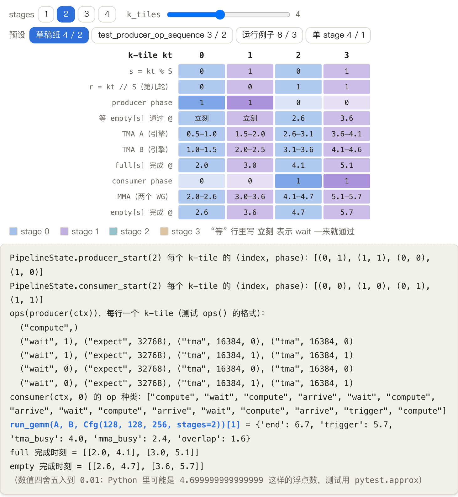
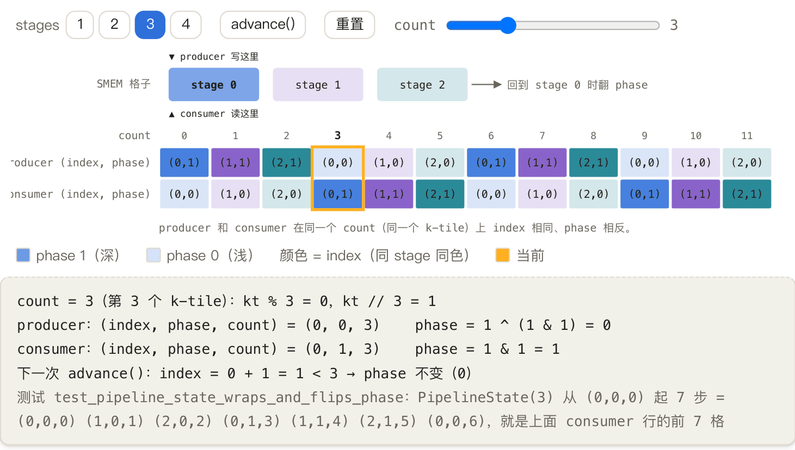
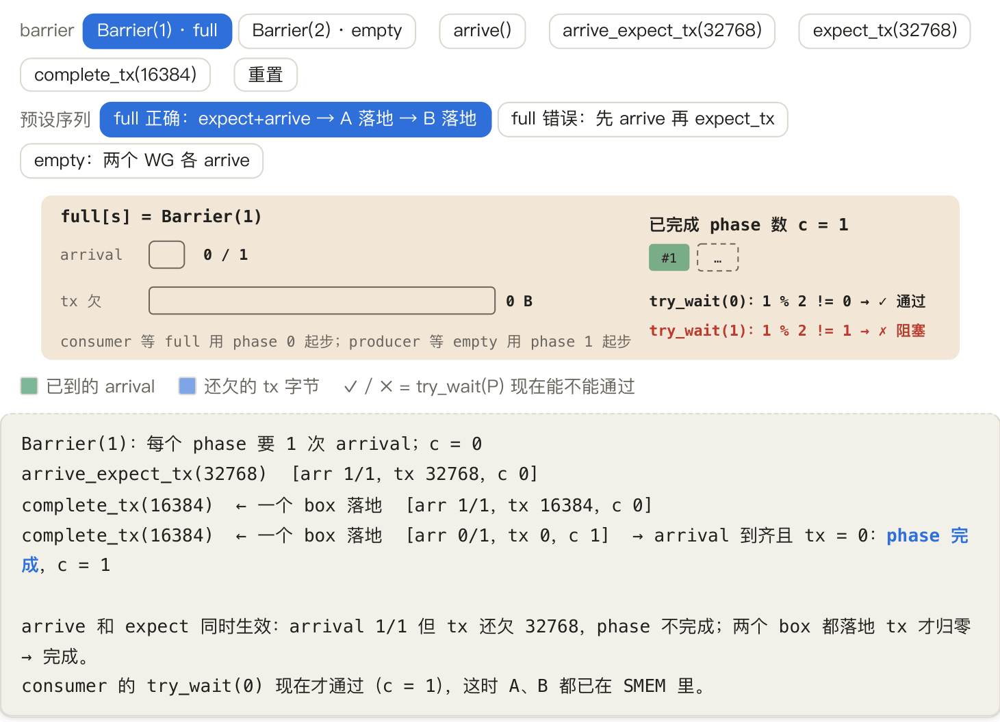
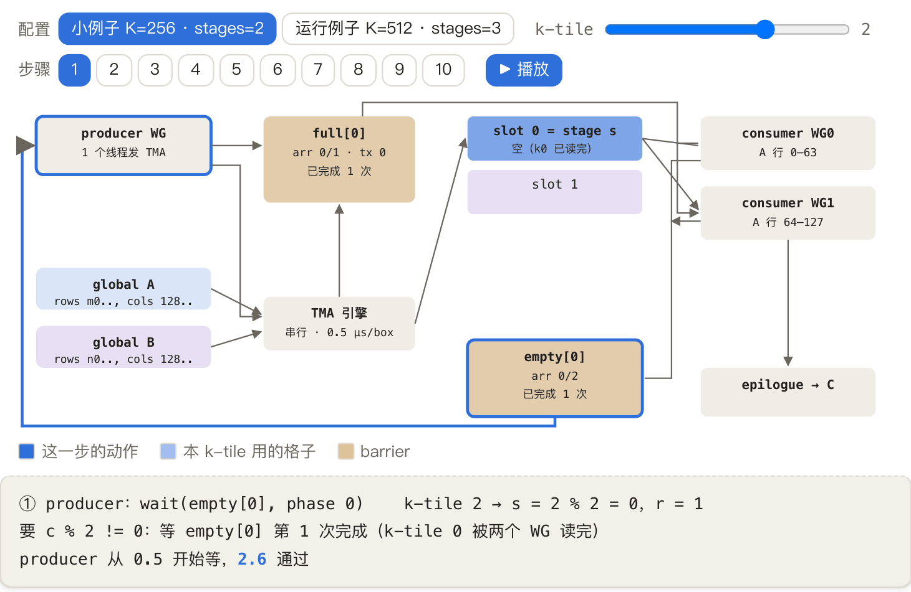
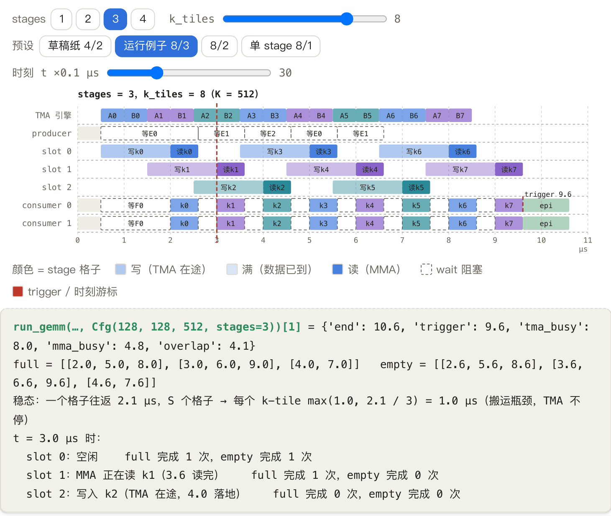
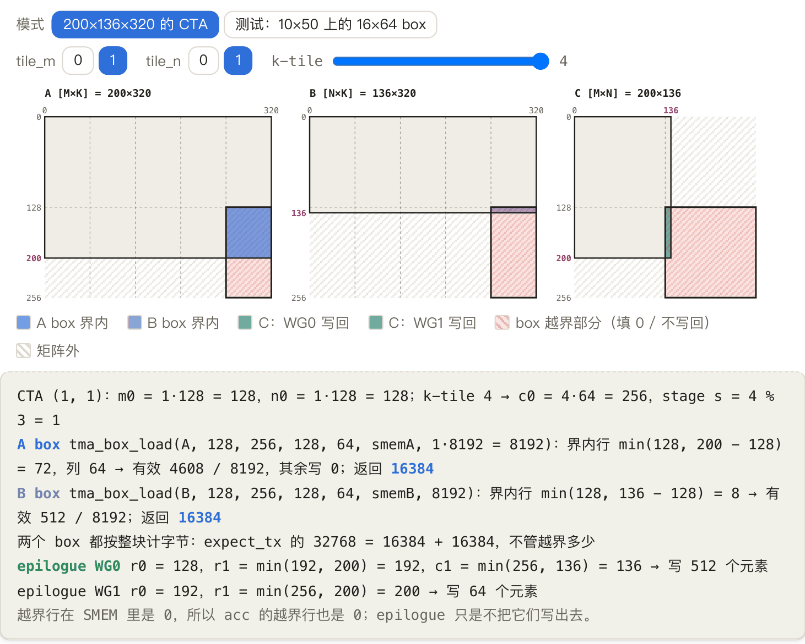
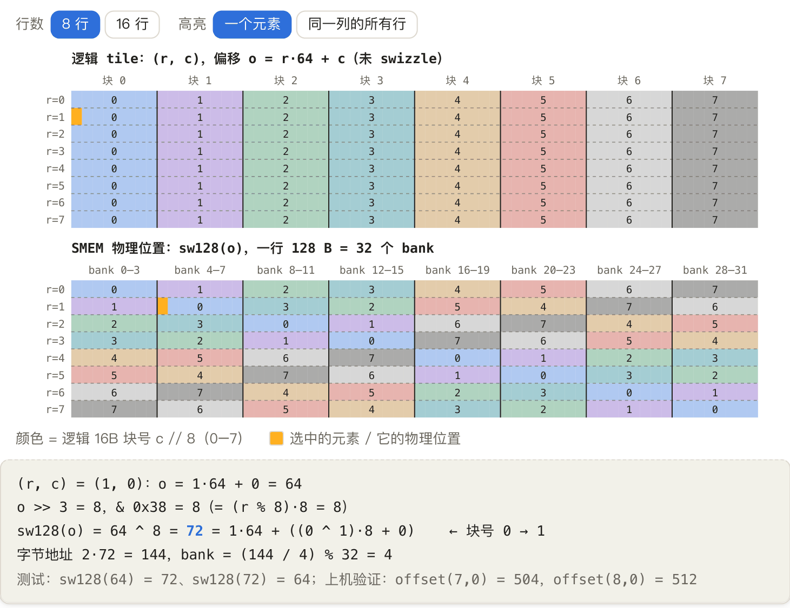
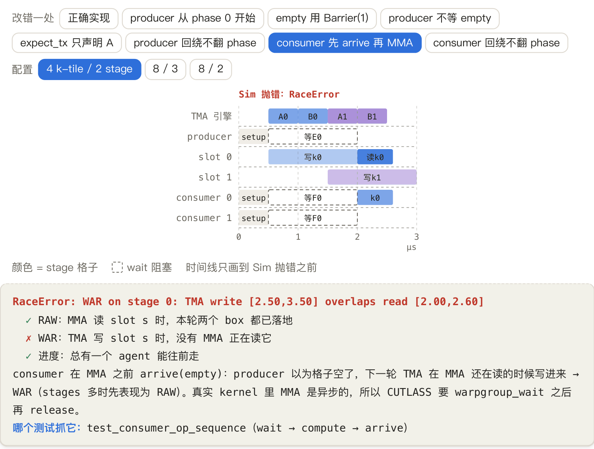
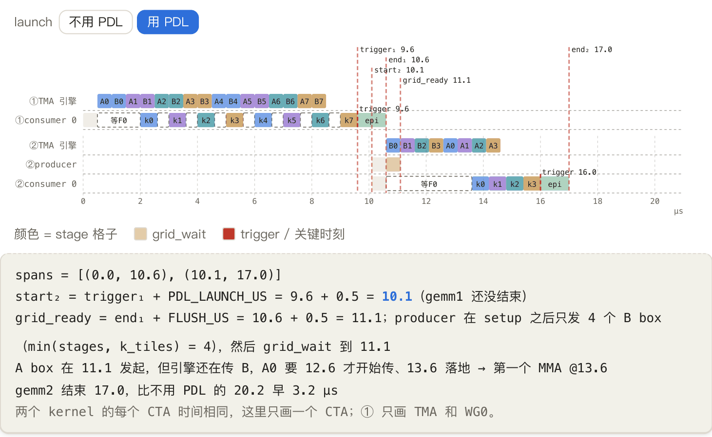

E1 · 完整成熟的 Tiled GEMM：TMA → swizzled SMEM 环形缓冲 → mbarrier 流水线 → warp specialization → epilogue → PDL
这是 capstone：把 TMA box、SW128 swizzle 的 SMEM 环形缓冲、mbarrier 的 full / empty 两组 barrier、producer / consumer warp group 分工、epilogue 和 PDL 接成一个 Hopper 风格的 GEMM。离散事件模拟器会抓住每一次数据竞争和死锁；结果要和 A @ B.T 逐元素相等，时间线要能看到搬运和计算的重叠。
文件: mine/e1_full_gemm.py 你的代码 · tests/test_e1_full_gemm.py 测试 · solutions/e1_full_gemm.py 参考解
题面速览
- 背景知识：时间维度 的 TMA、pipeline、warp specialization 三节，以及 真实代码导读。
- 在体系里的位置：结构对照 sm90_gemm_tma_warpspecialized_cooperative.hpp（1 个 producer warp group + 2 个 consumer warp group）；流水线状态对照 PipelineState 和 make_producer_start_state；主循环对照 collective 的 load 和 mma；最小的 TMA + mbarrier 主循环见 wgmma_tma_sm90.cu。
- 你要实现：
PipelineState（advance、producer_start、consumer_start）、tma_box_load、producer、consumer、run_gemm、chain。Barrier、Sim、sw128、smem_read、Ctx、区间工具和所有时间常量已经给出。 - 关键规则：
PipelineState.advance：index 加 1，绕回 0 时翻转 phase；stages == 1 时只翻 phase。producer 从 phase 1 开始，consumer 从 phase 0 开始。- producer 每个 k-tile：等
empty[s]→arrive_expect_tx(full[s], A+B 字节)→ TMA A → TMA B → advance。 - consumer 每个 k-tile：等
full[s]→ MMA（读 stage s）→arrive(empty[s])→ advance。empty每个 phase 要 2 次 arrival（两个 consumer WG 都放手才能复用）。 - TMA box 总是整块搬：越界元素填 0，字节数按整个 box 算。
- PDL 的后继：先只发 B（权重）的 TMA，
grid_wait之后再补发 A（前驱的输出）；trigger 在最后一个 k-tile 的 MMA 之后、epilogue 之前。
验收要点：given 的 sw128 等于真实 CuTe 的 GMMA SW128 atom · PipelineState 的序列与真实 CUTLASS 相同、单 stage 只翻 phase、两种起始状态 · TMA box 的 swizzle 位置与 OOB 填零、整块计字节 · producer 的 op 序列（第四个 k-tile 等 phase 0）· PDL producer 在 grid_wait 前只发 B、声明 A+B 字节 · consumer 的 op 序列和只有 WG 0 trigger · 五种形状和 stage 数的结果都等于 A @ B.T（含边界 tile）· 时间报告（18.3 / 10.6、重叠 4.1、trigger 9.6）· stage 越多越不慢 · 起始时间平移 · PDL 预取权重的收益 · 两个 GEMM 串联有无 PDL 的结果与 spans。
- TMA：Hopper 的拷贝引擎。一个线程用描述符发起一次多维 box 拷贝，硬件把 global memory 的一个矩形块搬进 SMEM，越界部分填零。
- mbarrier：SMEM 里的异步 barrier。每个 phase 需要固定次数的 arrival，外加 expect_tx 声明的字节全部到达（TMA 落地时
complete_tx）。try_wait.parity(P)在“已完成的 phase 数的奇偶 ≠ P”时通过。 - full / empty barrier：
full[s]表示 stage s 的数据已经到了（producer → consumer），empty[s]表示 stage s 已经用完可以覆盖（consumer → producer）。 - SW128：128 字节宽的 swizzle。对 16-bit 元素是
o ^ ((o >> 3) & 0x38)，把行号的低 3 位异或进 16 字节块号，让 8 行同一列落在不同 bank。
直觉与类比
出菜口有 stages 个格子。配菜员（producer WG）看到格子空了（empty）就去仓库拿料（TMA），先在格子上挂一张“还差 A、B 两包料”的单子（expect_tx），料到齐单子自动撕掉（full 完成）。两个厨师（consumer WG）看到格子满了就各自做自己那一半（BM/2 行），做完各拍一下格子上的铃（arrive empty），两声铃响格子才算空。格子上贴着一张“第几轮”的奇偶标签（phase）：同一个格子第 n 轮和第 n+1 轮的标签不同，所以没人会把上一轮的状态当成这一轮。配菜员开工时格子都是空的，所以他从“上一轮已经空了”的标签（phase 1）开始等，立刻通过。
图解：一个 CTA 里的三个 agent 和两组 barrier
empty[s] 一定完成过（两个 WG 都读完了），consumer 读 stage s 之前 full[s] 一定完成过（两个 box 都落地了）。Sim 的 RAW / WAR 检查就是在验证这两句话。从小例子开始：先在草稿纸上手算
8 个 k-tile、3 个 stage、三个 agent 同时跑，一上来就看完整时间线很容易乱。先拿一个小到每个事件都能写出来的例子：一个 CTA、4 个 k-tile、2 个 stage。把“哪个格子装哪个 k-tile、谁在等谁、等的是第几次完成”逐行推一遍，然后放大到测试里的 8 个 k-tile，最后写成一般公式。这就是你自己推这道题时草稿纸上该有的东西。
① 小：128×128×256，stages = 2
1 个 CTA，k_tiles = 256 / 64 = 4，2 个格子各用两轮。每个事件的时刻都能手算出来。
s = kt % 2：0 1 0 1
full = [[2.0, 4.1], [3.0, 5.1]]
empty = [[2.6, 4.7], [3.6, 5.7]]
end 6.7 · trigger 5.7 · overlap 1.6
② 测试的运行例子：K = 512，stages = 3
8 个 k-tile，3 个格子（256×256 的 4 个 CTA 时间完全相同）。格子够多，TMA 一直忙，变成搬运瓶颈。
full = [[2,5,8],[3,6,9],[4,7]]
end 10.6 · trigger 9.6 · overlap 4.1
stages 1/2/3/4 → 18.3 / 10.9 / 10.6 /
10.6
③ 边界：stages = 1 和 200×136×320
单 stage 时 index 永远是 0、只翻 phase，搬运和计算完全串行。200×136 时最后一行 / 列 CTA 的 box 有一大半越界。
stages=1：每个 k-tile 2.1 µs，end 18.3，
overlap 0
CTA (1,1)：A box 128 行里 72 行有效
B box 128 行里 8 行有效，字节仍
是 16384
④ 一般
把 ①–③ 的规律写成公式（T = 一个 stage 的 TMA 传输 1.0 µs，往返 = T + 0.5 + 0.6 = 2.1 µs）。
s = kt % S，r = kt // S
producer phase = 1 ^ (r & 1)，consumer
phase = r & 1
full[s] 第 r+1 次完成 = 2.0 + r·max(2.1,
S·T) + s·T
end = 最后一次 full + 0.6 + 1.0
✎ 草稿纸：M = N = 128，K = 256，stages = 2（1 个 CTA，4 个 k-tile）
0) 常量 一个 box = 128×64×2 B = 16384 B，引擎传 16384 / 32768 = 0.5 µs，传完再过 0.5 µs落地
一个 stage = A box + B box = 32768 B（expect_tx 声明的数）；MMA 0.6；setup
0.5；epilogue 1.0
1) PipelineState：每个 k-tile 用哪个格子、等哪个 phase
kt 0 1 2 3
s = index = kt % 2 0 1 0 1
r = kt // 2 0 0 1 1 ← 这个格子第几次被用
producer phase 1 1 0 0 ← producer_start = (0, 1)，回绕时翻
consumer phase 0 0 1 1 ← consumer_start = (0, 0)
2) producer（setup 0–0.5，之后它的“当前时刻”一直是 0.5，tma 不占 producer 的时间）
kt0 wait(empty[0], 1)：empty[0] 完成 0 次，0 % 2 = 0 ≠ 1 → 立刻过 @0.5
arrive_expect_tx(full[0], 32768)：arrival 1/1，tx = 32768 → 还不能完成
TMA A0 引擎 0.5–1.0，落地 1.5 full[0].tx = 16384
TMA B0 引擎 1.0–1.5，落地 2.0 full[0].tx = 0 且 arrival 到齐 → full[0] 第 1
次完成 @2.0
kt1 wait(empty[1], 1) 立刻过 @0.5
A1 1.5–2.0 → 2.5，B1 2.0–2.5 → 3.0 → full[1] 第 1 次完成 @3.0
kt2 回到 s = 0，phase 已翻成 0：wait(empty[0], 0) 要完成次数是奇数 → 一直等到 2.6
A2 2.6–3.1 → 3.6，B2 3.1–3.6 → 4.1 → full[0] 第 2 次完成 @4.1
（引擎 2.5 就空了，但格子 0 要到 2.6 才还回来：空转 0.1 µs）
kt3 wait(empty[1], 0) → 3.6；A3 3.6–4.1，B3 4.1–4.6 → 5.1 → full[1] 第 2 次完成
@5.1
3) consumer（两个 WG 的操作一模一样，时刻也一样）
kt0 wait(full[0], 0)：需要完成奇数次 → 2.0；MMA 2.0–2.6；两次 arrive → empty[0] 第 1次完成 @2.6
kt1 wait(full[1], 0) → 3.0；MMA 3.0–3.6 → empty[1] 第 1 次完成 @3.6
kt2 wait(full[0], 1)：2.6 时 full[0] 只完成 1 次，1 % 2 = 1，不 ≠ 1 → 不过（phase 挡住了“上一轮的满”）
→ 第 2 次完成 @4.1 才过；MMA 4.1–4.7 → empty[0] 第 2 次完成 @4.7
kt3 wait(full[1], 1) → 5.1；MMA 5.1–5.7 → empty[1] 第 2 次完成 @5.7
WG0 在 5.7 trigger；两个 WG 的 epilogue 5.7–6.7 → end = 6.7
4) 环形缓冲的占用（写 = 第一个 box 开始传 → 最后一个 box 落地；读 = MMA）
slot 0：k0 写 0.5–2.0 │ 满 │ 读 2.0–2.6 │ k2 写 2.6–4.1 │ 读 4.1–4.7
slot 1：k1 写 1.5–3.0 │ 满 │ 读 3.0–3.6 │ k3 写 3.6–5.1 │ 读 5.1–5.7
检查：每次“写”都在上一轮“读”结束之后开始（没有 WAR），每次“读”都在“写”落地之后（没有 RAW）
5) report
tma_busy = [0.5, 2.5] ∪ [2.6, 4.6] = 2.0 + 2.0 = 4.0
mma_busy = 4 × 0.6 = 2.4（两个 WG 的区间重合，取并集）
overlap = [2.0, 2.5] + [3.0, 3.6] + [4.1, 4.6] = 0.5 + 0.6 + 0.5 = 1.6
→ {'end': 6.7, 'trigger': 5.7, 'tma_busy': 4.0, 'mma_busy': 2.4, 'overlap': 1.6}
对比：同样 4 个 k-tile，stages = 1 是 9.9，stages = 3、4 是 6.6
下面这张表就是上面草稿纸的“可调”版本：改 stages 和 k-tile 数，每一列是一个 k-tile，每一行是这个 k-tile 经过的一个事件，颜色表示它用哪个 stage 格子。悬停格子会显示这个数是怎么来的；下方面板打印你的函数在这组参数下应该给出的东西（PipelineState 序列、producer 的 op 序列、run_gemm 的 report）。先用默认值对照草稿纸，再试 stages = 1 和 stages = 3。

图解详解：一个 k-tile 从 global 到累加器的全过程
这些图是交互版讲解页的静态快照，显示的是默认参数下的状态。文中提到的按钮、滑块和悬停提示在这里不能操作；图上的数字和下方的文字、表格、黑底面板说的是同一组值，可以直接对照你的函数输出。
前面的流程图只画了结构。这一节把整道题拆成八张可交互的图，每张对应一个要实现的部件或一条要满足的规则。点按钮、拖滑块、把鼠标停在色块上，下方的面板会把当前状态代入公式算给你看。所有时刻都由页面里一个 JS 版的 Sim 算出（逐行移植自参考解，和 Python 的结果逐项对拍过）。
先看全局：整道题的调用关系就是下面这几行。
for (tm, tn) in CTA 网格: # 每个 CTA 独立模拟，时间都从 start 开始
full = [Barrier(1) for s in range(S)] # producer → consumer：1 次 arrival + 327
empty = [Barrier(2) for s in range(S)] # consumer → producer：两个 WG 各 arrive 一
Sim.run([producer(ctx), consumer(ctx, 0), consumer(ctx, 1)])
# producer : setup →（wait empty[s] → arrive_expect_tx(full[s]) → TMA A → TMA B → advance）
# consumer : setup →（wait full[s] → MMA(stage s) → arrive(empty[s]) → advance）× k_tiles
图 1 · PipelineState ：环形下标 + phase 位
格子只有 S 个，k-tile 有很多个，所以 k-tile kt 用格子 kt % S ，第 kt // S 次用它。phase 位就是“第几轮”的奇偶：advance() 每次 index 加 1，回到 0 时翻 phase。producer 和 consumer 各有一个 PipelineState，处理同一个 k-tile 时 index 相同、phase 正好相反（producer 从 1 开始）。下面每一格是“第 count 次 advance 之前”的状态，深色是 phase 1、浅色是 phase 0。

源码对照：PipelineState::operator++ 、make_producer_start_state 。最小主循环 wgmma_tma_sm90.cu 里的read_state / write_state 也是同一个类型。
图 2 · mbarrier：arrival 计数、tx 字节、phase 的奇偶
一个 Barrier 只记三样东西：本 phase 已到的 arrival 数、还欠的 tx 字节、已完成的 phase 数 c。arrival 到齐且 tx = 0 时完成一个 phase（c 加 1，计数清零）。try_wait(P) 只看 c % 2 != P 。自己点几下按钮，或者选一个预设看完整序列：特别看“先 arrive 再 expect_tx”为什么会让 full 在数据落地前就完成。

源码对照：arrive_and_expect_tx 是一条 PTX mbarrier.arrive.expect_tx （ClusterTransactionBarrier ），等待是 mbarrier.try_wait.parity 的自旋循环（ClusterBarrier::wait ）。语义见 PTX ISA 的 mbarrier 一节（phase、pending arrival count、tx-count）。
图 3 · 一个 k-tile 的旅程：谁在等谁
把一个 k-tile 从“格子空了”到“格子再次空出来”拆成 10 步。上面是 CTA 里的部件，当前这一步用到的部件和箭头高亮；两个 barrier 方框里实时写着 arrival / tx / 完成次数。换 k-tile 看第二轮（r = 1）时 phase 怎么变；换成 stages = 3 的运行例子，看 k3 为什么要等 empty[0]。

源码对照：producer 一侧是 collective 的 load 循环 里的 producer_acquire → 两个
copy(tma_load_x.with(*tma_barrier), …) ；producer_acquire 本身就是“wait empty + arrive_and_expect_tx(full)”（PipelineTmaAsync::producer_acquire ）。
图 4 · 整条时间线与环形缓冲占用
这是整道题最该画在草稿纸上的图：横轴是时间，上面一行是 TMA 引擎（串行，一个 box 0.5 µs），下面每个 slot 一行，显示这个格子在什么时候装着哪个 k-tile：写（TMA 在途）→ 满（等 consumer）→ 读（MMA）→ 空闲。“写”结束那一刻就是 full[s] 完成，“读”结束那一刻就是 empty[s] 完成。拖“时刻”滑块，面板会列出那一刻每个格子的状态和两个 barrier 的完成次数。
看三件事：stages = 1 时所有事都排成一条线；stages = 2 时引擎每两块就空转 0.1 µs（往返 2.1 µs > 2 个 stage × 1.0 µs）；stages ≥ 3 时引擎从 0.5 一直忙到 8.5，MMA 被藏进了搬运里。

图 5 · tma_box_load ：整块搬、越界填 0
TMA 的 box 大小是编译期常量（A、B 都是 128×64），不管 tile 是不是贴着矩阵边。box 里越界的元素写 0，字节数按整块算（否则 expect_tx 声明的 32768 永远等不齐）。左边模式是测试 test_full_gemm_handles_partial_tiles 的 200×136×320：选 CTA 和 k-tile，看 A box、B box 有多少行在界内，以及 epilogue 两个 WG 各写回多少。右边模式是测试 test_tma_box_load_out_of_bounds_fills_zero 的小例子，每个元素都画出来了。

源码对照：TMA 的 box、OOB 填零和描述符见 CuTe TMA tensors 和 PTX ISA 的 cp.async.bulk.tensor。
图 6 · SW128：一个 stage 里元素 (m, k) 放在哪
A box 是 K-major 的 128×64 half：一行 64 个元素 = 128 字节 = 8 个 16 字节块（每块 8 个元素、占 4 个 bank）。不 swizzle 时，8 行的同一列落在同一个 16 字节块号上，MMA 一次读一列 8 行就是 8 路 bank conflict。sw128(o) = o ^ ((o >> 3) & 0x38) 把行号低 3 位异或进块号：物理块号 = 逻辑块号 ^ (行 % 8)，块内顺序不变。上面是逻辑 tile（按逻辑块号着色），下面是 SMEM 里的物理位置。悬停任意格子看公式；默认选中测试里的 (1, 0) → 72。

源码对照：cute::Swizzle ；真实 GMMA 布局原子 Layout_K_SW128_Atom_Bits 是作用在位地址上的 Swizzle<3,4,3> ，换算成 16-bit 元素就是本题的 Swizzle<3,3,3> （“上机验证”一节 8192 个位置全部对上）。
图 7 · 逐条规则检查：改错一处，Sim 报什么
每个按钮把正确实现改坏一处（都是易错点里列的写法），然后用同一个 Sim 重跑。看时间线在哪里断掉、Sim 抛的是哪种错。注意 “empty 只要 1 次 arrival” 在有些配置下 Sim 抓不到：本题两个 WG 的 MMA 同时结束，真正出错的是 empty 每轮完成了两次、phase 奇偶乱掉，要到 k-tile 数超过 2·stages 时才暴露成 RAW（8 个 k-tile 时 stages ≤ 3 会报错，小例子 4 个 k-tile / 2 stage 和 8 / 4 都照常跑完）。所以 Barrier(NUM_CONSUMERS) 要靠你自己保证。

图 8 · PDL：两个 GEMM 串联
chain 里 gemm2 的 A 是 gemm1 的输出 H，B 是权重 W2。不用 PDL：gemm2 在 gemm1 结束 3.0 µs 后才启动。用 PDL：gemm1 的 WG0 在最后一个 MMA 之后 trigger，0.5 µs 后 gemm2 就启动；它先做 setup、只发 B（W2，和前驱无关）的 TMA，然后在 grid_wait 等到 gemm1 结束 + 0.5 µs，才补发 A。切换开关对比两条时间线。

源码对照：launch_dependent_grids / wait_on_dependent_grids （各是一条 griddepcontrol PTX）；cooperative kernel 在最后一个 tile 之后 trigger（launch_dependent_grids 调用处），producer 在发 TMA 之前 wait（wait_on_dependent_grids 调用处）。概念见 CUDA C++ Programming Guide 的 Programmatic Dependent Launch and Synchronization。
速查：全部公式和不变量
| 部件 | 公式 / 规则 | 小例子（K=256,S=2） |
|---|---|---|
PipelineState |
kt 用 s = kt % S ，第 r = kt // S 轮；producer phase = 1 ^ (r & 1) ，consumer phase = r & 1 ；S = 1 时 index 恒 0、每步翻 phase |
producer (0,1)(1,1) (0,0)(1,0) |
try_wait(P ) |
已完成次数 c，c % 2 != P 通过 ⇒ producer 等 empty[s] 第 r 次完成，consumer 等 full[s] 第 r+1 次完成 |
kt2 的 consumer 要 full[0] 完成 2 次 |
| full[s] | Barrier(1) ；arrive_expect_tx(A+B = 32768) 一次做完，两个 box 落地各 complete_tx(16384) |
[[2.0, 4.1], [3.0, 5.1]] |
| empty[s] | Barrier(NUM_CONSUMERS = 2) ；每个 WG MMA 之后 arrive 一次 |
[[2.6, 4.7], [3.6, 5.7]] |
tma_box_load |
smem[base + sw128(r·cols + c)] = src[r0+r, c0+c] （越界 = 0），返回 rows·cols·2 ；A 的 base = s·BM·BK ，B 的 base = s·BN·BK |
每个 box 16384 B |
sw128 |
o ^ ((o >> 3) & 0x38) ⇔ 物理块号 = (c // 8) ^ (r % 8) |
(1,0) → 72，(1,8) → 64，(7,0) → 504 |
| TMA 时间 | 开始 = max(发起, 引擎空闲)；传 0.5 µs/box；落地 = 传完 + 0.5 | A0 0.5–1.0 → 1.5 |
| 稳态 | full[s] 第 r+1 次 = 2.0 + r·max(2.1, S·1.0) + s·1.0；end = 最后 full + 0.6 + 1.0；trigger = end − 1.0 | end 6.7，trigger 5.7 |
| consumer 行 | WG w 读 A 的 [w·BM/2, (w+1)·BM/2) 行、整块 B；epilogue 裁到 min(·, M) 、min(·, N) |
WG0 行 0–63，WG1 行 64–127 |
| PDL | start₂ = trigger₁ + 0.5，grid_ready = end₁ + 0.5；预取 min(S,k_tiles) 个 B；不用 PDL：start₂ = end₁ + 3.0 | 测试：10.1 / 11.1 vs 13.6 |
| 不变量 | TMA 写 slot s 之前，上一轮的 MMA 已读完（WAR）；MMA 读 slot s 之前，本轮两个 box 都已落地（RAW） | slot 0：读 2.0–2.6，写 2.6–4.1 ✓ |
逐步演示
三个 agent 都先花 0.5 µs 做 setup。producer 的 PipelineState.producer_start(3) 是 (index 0, phase 1)：三个 empty[s] 都还没完成过 phase，try_wait(1) 立刻通过，所以它连续填满 3 个 stage。每个 stage 两个 16 KB 的 box，TMA 引擎每个传 0.5 µs：区间是 0.5–1.0、1.0–1.5 …… 3.0–3.5。
stage 0 的 B box 在 1.5 传完，再过 0.5 µs 落地：full[0] 在 2.0 完成。两个 consumer 的 consumer_start 是 phase 0，try_wait(0) 在 2.0 通过，并行做 0.6 µs 的 MMA（2.0–2.6），各自只读 A 的一半行。
两个 consumer 在 2.6 各 arrive 一次，empty[0] 的第一个 phase 完成（需要 2 次）。这正是 empty 每个 phase 需要 NUM_CONSUMERS 次 arrival 的原因：只等一个 WG 就复用，另一个 WG 还在读的数据会被 TMA 覆盖（Sim 会报 WAR）。
producer 在第 4 个 k-tile 回到 index 0，phase 已经翻成 0：try_wait(0) 要求 empty[0] 完成过奇数次，2.6 之后成立。TMA k3 在 3.5–4.5 传输（引擎是串行的，而且前面已经排到 3.5）。如果 producer 不翻 phase，它会在 stage 0 上永远等不到，Sim 报 Deadlock。
每个 stage 要 1.0 µs 的 TMA，MMA 只要 0.6 µs：TMA 一直在忙（tma_busy = 8.0），MMA 每 1 µs 做一次（2.0、3.0 …… 9.0，mma_busy = 4.8）。MMA 和 TMA 的重叠 overlap = 4.1 µs。
最后一个 MMA 在 9.6 结束，WG 0 在这里 trigger（report["trigger"] = 9.6），然后两个 WG 各做 1.0 µs 的 epilogue，CTA 在 10.6 结束。对比 stages = 1：每个 k-tile 都要 1.5 µs（传输 + 延迟）+ 0.6 µs MMA，完全串行，结束在 18.3，overlap = 0。stages = 2 是 10.9，3 和 4 都是 10.6：再多 stage 也快不过 TMA 带宽。
易错点
- producer 从 phase 0 开始。 empty barrier 一开始没完成过任何 phase，
try_wait(0)不通过，三个 agent 全部卡住。测试test_pipeline_start_states；完整运行时 Sim 报Deadlock。 - empty 只要 1 次 arrival。 真实 kernel 里第一个 WG 做完就放行 producer，第二个 WG 还在读的 stage 会被覆盖。本题两个 WG 同时读完，表现为另一种错：每个 WG 的 arrive 各完成一个 phase，empty 每轮完成两次，phase 奇偶和 producer 对不上。Sim 不一定抓得到：4 个 k-tile / 2 stage、8 / 4 都照常跑完，8 个 k-tile、stages ≤ 3 时才报 RAW（见图 7）。题目给的
run_gemm构造要求是Barrier(NUM_CONSUMERS)，这一条要靠你自己保证。 - producer 跳过 empty wait。 TMA 写进一个还没被读完的 stage：Sim 报
RaceError（所有 stages 的正确性用例都会失败）。 - expect_tx 只声明 A 的字节。 full 在 A 落地时就完成，consumer 读 B 时 B 还没到：Sim 报
RAW on stage …。PDL 路径里也一样：先发 B、后发 A，但声明的必须是 A+B。测试test_producer_pdl_prefetches_weights_before_grid_wait。 - 越界部分不搬或少计字节。 TMA 的 box 是整块：边界 tile 里越界行必须是 0（否则累加了上一个 tile 的残留），字节数必须是整块，否则 tx 计数永远不归零。测试
test_tma_box_load_swizzles_and_zero_fills、test_run_gemm_is_correct[MNK2-2]。 - trigger 放在 epilogue 之后或者两个 WG 都 trigger。 测试
test_consumer_op_sequence_and_single_trigger要求只有 WG 0、在最后一个 k-tile 之后、epilogue 之前。 - PDL 后继在 grid_wait 之前读了 A。 A 是前驱的输出 H。测试检查
grid_wait之前的 TMA 只有 B。
对照文档
“多 stage pipeline 会用多个 shared-memory buffer：计算当前 stage 时，producer 预取后续 stage；consumer 在确认数据 ready 后再消费；stage 被用完后才能释放并复用。……例如一个 warp group 负责 TMA load（producer），其他 warp group 负责 MMA（consumer）。……这里增加的不只是新的 Layout：还需要角色分配、pipeline 状态、barrier、warp-group 同步以及架构特定的指令语义。”
文档伪代码和本题、CUTLASS 的对应关系：
| 文档伪代码 | 本题 | CUTLASS |
|---|---|---|
gA_tile = local_tile(gA, tile_MK, cta_coord) |
run_gemm 里的 m0, n0 和 tma_box_load(src, r0, c0, …) |
local_tile(mA_mkl, …) + tma_partition |
sA = make_tensor(smem, swizzled_layout_A) |
smemA + sw128 |
GMMA::Layout_K_SW128_Atom<half_t> + tile_to_shape |
issue_load / wait_until_ready / release |
producer / consumer 的 wait、expect、tma、arrive | producer_acquire / consumer_wait / consumer_release |
gemm(tiled_mma, …) |
consumer 里 acc[wg] += A_part · B_partᵀ |
cute::gemm + warpgroup_arrive/commit/wait |
store(gC_tile, accumulator) |
最后一个 compute(EPI_US, …) |
collective_epilogue.store |
| 后继 kernel 的 PDL | chain(..., pdl=True) |
launch_dependent_grids / wait_on_dependent_grids |
真实代码
简化自 PipelineState::operator++ 和 make_producer_start_state ：
void operator++() {
if constexpr (Stages == 1) { phase_ ^= 1; ++count_; }
else { ++index_; ++count_; if (index_ == Stages) { index_ = 0; phase_ ^= 1; } }
}
// Producer starts with an opposite phase as the buffers are initially empty
make_producer_start_state() { return {/*index*/0, /*phase*/1, /*count*/0}; }
简化自 PipelineTmaAsync::producer_acquire 、consumer_wait 、consumer_release ：
void producer_acquire(uint32_t stage, uint32_t phase) {
empty_barrier_ptr_[stage].wait(phase); // 本题：("wait"
if (params_.is_leader)
full_barrier_ptr_[stage].arrive_and_expect_tx(params_.transaction_bytes); // ("arrive
}
void consumer_wait(uint32_t stage, uint32_t phase) { full_barrier_ptr_[stage].wait(phase)
void consumer_release(uint32_t stage) { empty_barrier_ptr_[stage].arrive(...)
简化自 collective 的 load （producer WG 里的一个线程执行）：
for ( ; k_tile_count > 0; --k_tile_count) {
pipeline.producer_acquire(smem_pipe_write);
auto* tma_barrier = pipeline.producer_get_barrier(smem_pipe_write); // = full[s]
int write_stage = smem_pipe_write.index();
copy(tma_load_a.with(*tma_barrier, mcast_mask_a), tAgA(_,_,_,*k_tile_iter), tAsA(_,_,_,w
copy(tma_load_b.with(*tma_barrier, mcast_mask_b), tBgB(_,_,_,*k_tile_iter), tBsB(_,_,_,w
++k_tile_iter;
++smem_pipe_write;
}
kernel 层的角色分工简化自 producer 分支 和 consumer 分支：producer WG warpgroup_reg_dealloc<40>() 把寄存器让出来，consumer WG warpgroup_reg_alloc<232>() 拿去放累加器（LoadRegisterRequirement / MmaRegisterRequirement ）。本题没有模拟寄存器，E2 会用到这两个数。
本题简化掉的部分：TMA multicast 和 cluster（mcast_mask ）、persistent tile scheduler（一个 CTA 循环处理多个 tile）、consumer 侧的 warpgroup_wait<K_PIPE_MMAS> （让 MMA 也异步、晚一拍释放 stage）、epilogue 自己的 TMA store 流水线。
上机验证
playground/run.sh playground/e1_full_gemm.cpp # 真实 CuTe，本机编译运行
本机的真实输出：
SW128 atom : Sw<3,4,3> o smem_ptr[16b](unset) o (_8,_64):(_64,_1)
sA (128x64) : Sw<3,4,3> o smem_ptr[16b](unset) o ((_8,_16),(_64,_1)):((_64,_512),(_1,_0))
offset(0,8) = 8 offset(1,0) = 72 offset(1,8) = 64 offset(7,0) = 504 offset(8,0) = 512
sw128(m*64+k) vs real CuTe offset: 0 mismatches of 8192
stage bytes (A 128x64 + B 128x64, half) = 32768
两点值得注意。第一，CuTe 打印的是 Sw<3,4,3>，不是本题的 Swizzle<3,3,3>：真实的 swizzle 挂在 smem_ptr 上、作用在字节地址上（16 字节块 = 低 4 位），换算成 16-bit 元素偏移正好是 o ^ ((o >> 3) & 0x38)。只看 layout 的整数值会得到没 swizzle 的 64，必须通过真实指针算偏移才是 72，8192 个位置和给定的 sw128 全部一致。第二，一个 stage 的字节数 32768 就是 producer 传给 arrive_and_expect_tx 的数（TmaTransactionBytes）。
这个 GEMM 的真实版本需要 Hopper（SM90）的 WGMMA 和 TMA。RTX 5090（SM120）有 TMA 和 mbarrier，但没有 WGMMA，CUTLASS 在它上面用另一套 kernel；本题的协议（stage、phase、full / empty、warp specialization、PDL）在那里同样适用。
三级提示
L1I/O 例子和关键问题方向（轻度剧透）
st = PipelineState.producer_start(3)
# 连续 advance 7 次看到的 (index, phase)：
# [(0, 1), (1, 1), (2, 1), (0, 0), (1, 0), (2, 0), (0, 1)]
A = np.random.default_rng(1).standard_normal((128, 512)); B = ... # 同形
C, r = run_gemm(A, B, Cfg(128, 128, 512, stages=1))
r # {'end': 18.3, 'trigger': 17.3, 'tma_busy': 8.0, 'mma_busy': 4.8, 'overlap': 0.0}
C, r = run_gemm(A, B, Cfg(128, 128, 512, stages=3))
r # {'end': 10.6, 'trigger': 9.6, 'tma_busy': 8.0, 'mma_busy': 4.8, 'overlap': 4.1}
chain(X, W1, W2, Cfg(128, 256, 256), Cfg(128, 128, 256), False)[1] # [(0.0, 6.6), (9.6, 16.2)]
chain(X, W1, W2, Cfg(128, 256, 256), Cfg(128, 128, 256), True)[1] # [(0.0, 6.6), (6.1, 13.0)]
关键问题
- producer 为什么从 phase 1 开始？如果从 0 开始会发生什么？
empty[s]每个 phase 为什么要 2 次 arrival？full[s]为什么只要 1 次？- 为什么“声明字节”和“arrive”要合成一个
arrive_expect_tx？如果先 arrive 再单独 expect_tx 会怎样？ - PDL 路径里，为什么预取窗口是
min(stages, k_tiles)个 stage？能不能把所有 k-tile 的 B 都在grid_wait之前发出去？
L2思路拆解与常见坑拆解与常见坑（中度剧透）
PipelineState：照着 CUTLASS 的operator++写，三个字段，两个 classmethod。tma_box_load：用np.arange做行、列索引，inb = (r0+r < R) & (c0+c < C)；先建全 0 的 vals，把在界内的元素填进去，再一次性写到smem[base + sw128(r*cols + c)]。返回rows*cols*ELEM_BYTES。- 写一个小工具，给定 (stage, k-tile, "A" 或 "B") 返回一个闭包：调用时执行对应的
tma_box_load。stage 的基址是s*BM*BK（A）或s*BN*BK（B）。 producer：先 yield setup，然后用producer_start。PDL 时先做一个预取循环（wait empty → expect A+B → 只发 B → advance），yield ("grid_wait",)之后用一个新的producer_start状态补发这些 stage 的 A，再从第min(stages, k_tiles)个 k-tile 开始正常循环。consumer：每个 k-tile 的 fn 用smem_read读出 A 的本 WG 行和整块 B，acc[wg] += a @ b.T；最后 WG 0 trigger，再 epilogue 写回（C[m0+r, n0:n0+cols] = acc[...]，裁掉越界部分）。run_gemm：每个 CTA 一个 Ctx 和一个 Sim；report 的 busy / overlap 用 CTA 0 的区间算。chain：第一个 GEMM 正常跑；第二个按 pdl 与否算 start 和 grid_ready。
L3关键问题的答案几乎是答案（重度剧透）
答案
- 一开始所有 stage 都是空的，producer 要等的是“上一轮已经被吃完”，而 empty barrier 还没完成过任何 phase：完成数 0 是偶数，
try_wait(1)立刻通过。从 0 开始，try_wait(0)要等第一个 phase 完成，可 consumer 还在等 full，三方互等：死锁。 - 两个 consumer WG 都读同一个 stage（各读自己那一半 A、整块 B），只有两个都读完才能覆盖，所以 empty 每轮要 2 次 arrival。full 的“到达”由 producer 一次
arrive_expect_tx加上 TMA 的字节完成，所以 1 次 arrival 就够。 - 分开写时，arrive 之后、expect_tx 之前的那一瞬间，barrier 看到“arrival 到齐、tx = 0”，phase 立刻完成，consumer 会在数据还没到时通过 wait。合成一条保证“声明字节”先于“到达”生效。
- 每个 stage 只能装一个 k-tile 的数据；预取第
stages+1个 k-tile 的 B 需要先复用 stage 0，而复用要等 consumer 读完 stage 0，consumer 读 stage 0 又要等 A，A 要等grid_wait：所以 grid_wait 之前最多预取min(stages, k_tiles)个 stage。
参考解
✓solutions/e1_full_gemm.py先自己写完、跑过测试再看
"""E1 · 完整成熟的 Tiled GEMM：TMA box → swizzled SMEM 环形缓冲 → mbarrier 流水线 → warp specialization → MMA → epilogue → PDL 串联 — reference solution.
这是 capstone：把前面所有部件接成一个 Hopper 风格的 warp-specialized GEMM，功能上逐元素正确，时间上能看到
搬运与计算的重叠，最后用 PDL 串联第二个 GEMM。结构对照 CUTLASS 的
include/cutlass/gemm/kernel/sm90_gemm_tma_warpspecialized_cooperative.hpp（1 个 producer warp group 发 TMA，
2 个 consumer warp group 做 MMA）、include/cutlass/pipeline/sm90_pipeline.hpp（PipelineTmaAsync、PipelineState）
和 examples/cute/tutorial/hopper/wgmma_tma_sm90.cu（mbarrier + TMA 的最小主循环）。
问题：C[M,N] = A[M,K] · B[N,K]ᵀ（A、B 都是 K 连续，即文档里的 “A × Bᵀ”）。每个 CTA 算一个 BM×BN 的 C tile，
沿 K 每次取 BK=64（一个 k-tile）。两个 consumer warp group 合作：WG w 负责 tile 的第 [w·BM/2, (w+1)·BM/2) 行。
数值用 float64 模拟（half 的字节数只用来算时间和 TMA 字节数：ELEM_BYTES = 2）。
given（不需要你写）
- Cfg(M, N, K, BM=128, BN=128, BK=64, stages=4)，以及时间常量 TMA_LAT_US、TMA_BYTES_PER_US、MMA_US、EPI_US、SETUP_US、
STREAM_GAP_US、PDL_LAUNCH_US、FLUSH_US。
- sw128(offset)：16-bit 元素的 SW128 swizzle（CuTe Swizzle<3,3,3>，作用在元素偏移上）：o^ ((o >> 3) & 0x38)。
一个 stage 的 A tile（BM×BK，K-major，BK = 64）里元素 (m, k) 放在 smem[stage_base + sw128(m·BK + k)]；B 同理（BN×BK）。
- smem_read(smem, base, rows, cols)：按同样的 swizzle 读出逻辑 tile（consumer 的视角）。
- Barrier：mbarrier 模型。init 时给出每个 phase 需要的 arrival 数；arrive(t)、expect_tx(bytes, t)、complete_tx(bytes, t)；
phase 在“arrival 到齐且 tx 字节清零”时完成，完成时刻是参与事件时间的最大值。
try_wait(parity, t) 与 PTX mbarrier.try_wait.parity 相同：截至时刻 t 已完成的 phase数为 c，c % 2 != parity 时通过。
- Sim：离散事件模拟器。每个 agent 是一个 generator，yield 下面的操作：
("wait", bar, parity) 阻塞直到 bar.try_wait(parity) 通过
("arrive", bar) 到达一次
("arrive_expect_tx", bar, nbytes) 到达一次并声明本 phase 还要等 nbytes 的 TMA字节
("tma", bar, nbytes, fn, stage) 发起 TMA：引擎串行传输 nbytes/TMA_BYTES_PER_US，传完再过 TMA_LAT_US 落地；
落地时对 bar 做 complete_tx(nbytes)；fn()在发起时立刻执行（做数据搬运）
("compute", us, fn, stage) 占用 us 微秒后执行 fn()（stage 是读的 smem stage，不读写时为 None）
("grid_wait",) griddepcontrol.wait：等到 sim.grid_ready（前驱 kernel 结束 + FLUSH）
("trigger",) launch_dependents：记录 sim.trigger_time（只影响后继的启动时间）
Sim 检查数据竞争：TMA 写某个 stage 的区间和对它的读区间重叠 → RaceError("WAR …")；读一个stage 时它最近一次写还没
落地 → RaceError("RAW …")；所有 agent 都阻塞 → Deadlock。run() 返回每个 agent 的结束时间，并记录 tma / mma 忙区间。
你要实现
PipelineState(stages, index=0, phase=0, count=0)
.advance() index+1；回到 0 时 phase ^= 1；count+1（与CUTLASS PipelineState::operator++ 相同，stages == 1 时只翻 phase）
PipelineState.producer_start(stages) -> PipelineState(stages, 0, 1, 0) 生产者从相反的 phase 开始，因为 buffer 一开始都是空的
PipelineState.consumer_start(stages) -> PipelineState(stages, 0, 0, 0)
tma_box_load(src, r0, c0, rows, cols, smem, base) -> int
把 src[r0:r0+rows, c0:c0+cols] 按 sw128 写到 smem[base + …]；越界（r ≥ src 行数或 c ≥ 列数）的元素写 0（TMA 的
OOB 填零）。返回传输的字节数 rows·cols·ELEM_BYTES（越界部分也计入，TMA box 总是整块）。
producer(ctx) generator：先 ("compute", SETUP_US, None, None)；
对每个 k-tile：等 empty[s]（producer 的 phase）→ arrive_expect_tx(full[s], A和 B 两个 box 的字节和)
→ 两个 tma（先 A box 再 B box，stage 参数都传 s）→ state.advance()。
ctx.pdl_wait 为 True 时（被 PDL 提前启动的后继 kernel）：前 min(stages, k_tiles)个 stage 先只发 B（权重，独立
operand）的 TMA（expect_tx 仍然按 A+B 的总字节声明），然后 ("grid_wait",)，再补发这些 stage 的 A，之后正常循环
（对应 CUTLASS example 63：在 griddepcontrol.wait 之前预取权重）。
consumer(ctx, wg) generator：先 ("compute", SETUP_US, None, None)；对每个 k-tile：等 full[s]（consumer 的 phase）→
("compute", MMA_US, fn, s)，fn 把 smem 里本 WG 负责的 A 行和整块 B 读出来，acc[wg] += A_part · B_partᵀ
→ arrive(empty[s]) → advance。最后一个 k-tile 之后：wg == 0 时 yield ("trigger",)（CUTLASS 在最后一个 tile 的
mma_tail 之后调用 launch_dependent_grids），然后 ("compute", EPI_US, fn, None)把 acc 写回 C（裁掉越界部分）。
run_gemm(A, B, cfg, start=0.0, grid_ready=0.0, pdl_wait=False) -> (C, report)
对每个 CTA（tile_m 外层、tile_n 内层）建 smem、full/empty 两组 Barrier（full 每phase 1 个 arrival，
empty 每 phase 2 个 arrival = consumer WG 数）、一个 Sim（起始时间 start、grid_ready），跑 producer + 2 个 consumer。
假设每个 CTA 独占一个 SM、同时运行。report = {"end": 所有 CTA 结束时间的最大值, "trigger": 所有 CTA trigger
时间的最大值, "tma_busy": CTA 0 的 TMA 忙时间, "mma_busy": CTA 0 的 MMA 忙时间（两个 WG 的区间取并集）,
"overlap": CTA 0 里 MMA 忙区间与 TMA 忙区间交集的长度}。
chain(X, W1, W2, cfg1, cfg2, pdl) -> (Y, spans)
H = X·W1ᵀ，Y = H·W2ᵀ（第二个 GEMM 的 A 是 H，B 是 W2）。不用 PDL：第二个 kernel start = end1 + STREAM_GAP_US，
grid_ready = start（不需要等）。用 PDL：start = trigger1 + PDL_LAUNCH_US，grid_ready = end1 + FLUSH_US，
pdl_wait=True。spans = [(0, end1), (start2, end2)]。
"""
from __future__ import annotations
from dataclasses import dataclass
import numpy as np
ELEM_BYTES = 2 # half：只用于字节数与时间
TMA_LAT_US = 0.5 # TMA 传完到数据落地 / barrier 完成的延迟
TMA_BYTES_PER_US = 32768 # 每个 SM 的 TMA 传输速度：一个 128×64 + 128×64 的 stage（32KB）需要 1 µs
MMA_US = 0.6 # 一个 consumer WG 做完一个 k-tile 的 MMA（两个 WG 并行）
EPI_US = 1.0 # epilogue：写回 C tile
SETUP_US = 0.5 # kernel 开始时的初始化（barrier init、算地址）
STREAM_GAP_US = 3.0 # 普通 stream：前一个 kernel 结束到下一个开始
PDL_LAUNCH_US = 0.5 # launch_dependents 之后到后继 kernel 开始
FLUSH_US = 0.5 # 前驱结束到 griddepcontrol.wait 返回
NUM_CONSUMERS = 2
@dataclass(frozen=True)
class Cfg:
M: int
N: int
K: int
BM: int = 128
BN: int = 128
BK: int = 64
stages: int = 4
def sw128(o):
"""CuTe Swizzle<3,3,3> 作用在 16-bit 元素偏移上（SW128）：把行号的低 3 位异或进 16 字节块号。"""
return o ^ ((o >> 3) & 0x38)
def smem_read(smem, base, rows, cols):
"""读出 smem 里一个 rows×cols（K-major，cols == 64）的逻辑 tile。"""
r = np.arange(rows)[:, None]
c = np.arange(cols)[None, :]
return smem[base + sw128(r * cols + c)]
class RaceError(RuntimeError):
pass
class Deadlock(RuntimeError):
pass
class Barrier:
"""mbarrier 模型：每个 phase 需要 count 次 arrival，且 expect_tx 声明的字节全部 complete_tx。"""
def __init__(self, count: int):
self.count = count
self.completions = [] # 每个已完成 phase 的完成时刻
self._arr = 0
self._tx = 0
self._t = 0.0
def _maybe_complete(self):
if self._arr == self.count and self._tx == 0:
self.completions.append(self._t)
self._arr, self._tx, self._t = 0, 0, 0.0
def arrive(self, t):
self._arr += 1
self._t = max(self._t, t)
self._maybe_complete()
def expect_tx(self, nbytes, t):
self._tx += nbytes
self._t = max(self._t, t)
def complete_tx(self, nbytes, t):
self._tx -= nbytes
self._t = max(self._t, t)
self._maybe_complete()
def try_wait(self, parity, t):
c = sum(1 for x in self.completions if x <= t)
return c % 2 != parity
def next_pass_time(self, parity, t):
"""已知的完成时刻里，最早让 try_wait(parity) 通过的时刻；没有则 None。"""
for x in sorted(self.completions):
if x > t and self.try_wait(parity, x):
return x
return None
class Sim:
"""离散事件模拟器（见模块 docstring）。agents: list of (name, generator)。"""
def __init__(self, start=0.0, grid_ready=0.0):
self.start = start
self.grid_ready = grid_ready
self.trigger_time = None
self.tma_free = start
self.tma_busy = [] # (start, end) 传输区间
self.mma_busy = [] # (start, end) consumer 计算区间（stage 不为 None的 compute）
self.stage_ready = {} # stage -> 最近一次 TMA 写落地时刻
self.stage_reads = {} # stage -> [(start, end)]
self.stage_writes = {} # stage -> [(start, end)]
def run(self, agents):
st = []
for name, gen in agents:
st.append({"name": name, "gen": gen, "t": self.start, "op": None, "done": False})
for a in st:
self._fetch(a)
while True:
live = [a for a in st if not a["done"]]
if not live:
break
progressed = False
for a in sorted(live, key=lambda a: a["t"]):
if self._step(a):
progressed = True
break
if not progressed:
# 所有 agent 都卡在 wait 上，而且没有未来的完成事件能放行它们
raise Deadlock("all agents blocked: " + ", ".join(f"{a['name']}@{a['op'][0]}" for a in live))
return {a["name"]: a["t"] for a in st}
def _fetch(self, a, value=None):
try:
a["op"] = a["gen"].send(value) if a["op"] is not None else next(a["gen"])
except StopIteration:
a["done"] = True
a["op"] = None
def _step(self, a):
op = a["op"]
kind = op[0]
t = a["t"]
if kind == "wait":
_, bar, parity = op
if not bar.try_wait(parity, t):
nt = bar.next_pass_time(parity, t)
if nt is None:
return False
a["t"] = t = nt
elif kind == "arrive":
op[1].arrive(t)
elif kind == "arrive_expect_tx":
op[1].expect_tx(op[2], t)
op[1].arrive(t)
elif kind == "tma":
_, bar, nbytes, fn, stage = op
xs = max(t, self.tma_free)
xe = xs + nbytes / TMA_BYTES_PER_US
land = xe + TMA_LAT_US
self.tma_free = xe
self.tma_busy.append((xs, xe))
for (rs, re) in self.stage_reads.get(stage, []):
if re > xs and rs < land:
raise RaceError(f"WAR on stage {stage}: TMA write [{xs:.2f},{land:.2f}] overlaps read [{rs:.2f},{re:.2f}]")
self.stage_writes.setdefault(stage, []).append((xs, land))
self.stage_ready[stage] = max(self.stage_ready.get(stage, 0.0), land)
if fn is not None:
fn()
bar.complete_tx(nbytes, land)
elif kind == "compute":
_, us, fn, stage = op
if stage is not None:
ready = self.stage_ready.get(stage)
if ready is None or ready > t:
raise RaceError(f"RAW on stage {stage}: read at {t:.2f} before data lands at {ready}")
for (ws, we) in self.stage_writes.get(stage, []):
if we > t and ws < t + us:
raise RaceError(f"WAR on stage {stage}: read [{t:.2f},{t+us:.2f}] overlaps TMA write [{ws:.2f},{we:.2f}]")
self.stage_reads.setdefault(stage, []).append((t, t + us))
self.mma_busy.append((t, t + us))
a["t"] = t + us
if fn is not None:
fn()
elif kind == "grid_wait":
a["t"] = max(t, self.grid_ready)
elif kind == "trigger":
self.trigger_time = t if self.trigger_time is None else max(self.trigger_time, t)
else:
raise ValueError(f"unknown op {kind}")
self._fetch(a, None)
return True
def union_length(intervals):
"""区间并集的总长度。"""
tot, cur_s, cur_e = 0.0, None, None
for s, e in sorted(intervals):
if cur_e is None or s > cur_e:
if cur_e is not None:
tot += cur_e - cur_s
cur_s, cur_e = s, e
else:
cur_e = max(cur_e, e)
if cur_e is not None:
tot += cur_e - cur_s
return tot
def intersect_length(a, b):
"""两组区间（各自取并集后）交集的总长度。"""
def merge(iv):
out = []
for s, e in sorted(iv):
if out and s <= out[-1][1]:
out[-1][1] = max(out[-1][1], e)
else:
out.append([s, e])
return out
A, B = merge(a), merge(b)
i = j = 0
tot = 0.0
while i < len(A) and j < len(B):
lo = max(A[i][0], B[j][0])
hi = min(A[i][1], B[j][1])
if hi > lo:
tot += hi - lo
if A[i][1] < B[j][1]:
i += 1
else:
j += 1
return tot
@dataclass
class Ctx:
"""一个 CTA 的运行上下文（run_gemm 负责构造）。"""
cfg: Cfg
A: np.ndarray
B: np.ndarray
C: np.ndarray
m0: int
n0: int
smemA: np.ndarray
smemB: np.ndarray
full: list
empty: list
acc: list
pdl_wait: bool = False
@property
def k_tiles(self):
return -(-self.cfg.K // self.cfg.BK)
# ----------------------------------------------------------------------------- your code
class PipelineState:
"""环形 stage 下标 + phase 位（对照 cutlass/pipeline/sm90_pipeline.hpp 的 PipelineState）。"""
def __init__(self, stages, index=0, phase=0, count=0):
self.stages, self.index, self.phase, self.count = stages, index, phase, count
def advance(self):
"""index+1；绕回 0 时翻转 phase；count+1。stages == 1 时只翻 phase。"""
# phase 位让同一个 mbarrier 的相邻两次使用可以区分：第 2n 次和第 2n+1 次完成的奇偶不同
if self.stages == 1:
self.phase ^= 1
else:
self.index += 1
if self.index == self.stages:
self.index = 0
self.phase ^= 1
self.count += 1
@classmethod
def producer_start(cls, stages):
"""生产者从 phase 1 开始：空 buffer 的 empty barrier 还没完成过任何 phase，wait(1) 立刻通过。"""
return cls(stages, 0, 1, 0)
@classmethod
def consumer_start(cls, stages):
"""消费者从 phase 0 开始：要等第一次 full 完成。"""
return cls(stages, 0, 0, 0)
def tma_box_load(src, r0, c0, rows, cols, smem, base):
"""把 src[r0:r0+rows, c0:c0+cols] 按 sw128 写到 smem[base + …]，越界填 0，返回字节数。"""
R, Cn = src.shape
r = np.arange(rows)[:, None]
c = np.arange(cols)[None, :]
gr, gc = r0 + r, c0 + c
inb = (gr < R) & (gc < Cn)
vals = np.zeros((rows, cols), dtype=smem.dtype)
vals[inb] = src[np.minimum(gr, R - 1), np.minimum(gc, Cn - 1)][inb] # TMA OOB：越界元素填 0
smem[base + sw128(r * cols + c)] = vals
return rows * cols * ELEM_BYTES # box 总是整块传输
def _load_stage(ctx, s, kt, which):
cfg = ctx.cfg
if which == "A":
return lambda: tma_box_load(ctx.A, ctx.m0, kt * cfg.BK, cfg.BM, cfg.BK, ctx.smemA, s * cfg.BM * cfg.BK)
return lambda: tma_box_load(ctx.B, ctx.n0, kt * cfg.BK, cfg.BN, cfg.BK, ctx.smemB, s * cfg.BN * cfg.BK)
def producer(ctx):
"""producer warp：等 empty → expect_tx → 两个 TMA → advance。pdl_wait 时先预取 B再 grid_wait。"""
cfg = ctx.cfg
bytes_a = cfg.BM * cfg.BK * ELEM_BYTES
bytes_b = cfg.BN * cfg.BK * ELEM_BYTES
yield ("compute", SETUP_US, None, None)
st = PipelineState.producer_start(cfg.stages)
kt = 0
if ctx.pdl_wait:
# 预取窗口：前 min(stages, k_tiles) 个 stage 先只发 B（权重和前驱无关）
n_pre = min(cfg.stages, ctx.k_tiles)
pre = []
for _ in range(n_pre):
s = st.index
yield ("wait", ctx.empty[s], st.phase)
yield ("arrive_expect_tx", ctx.full[s], bytes_a + bytes_b) # 按整个 stage 声明
yield ("tma", ctx.full[s], bytes_b, _load_stage(ctx, s, kt, "B"), s)
pre.append((s, kt))
st.advance()
kt += 1
yield ("grid_wait",) # griddepcontrol.wait：之后才能读 A（= 前驱的输出）
for s, k in pre:
yield ("tma", ctx.full[s], bytes_a, _load_stage(ctx, s, k, "A"), s)
while kt < ctx.k_tiles:
s = st.index
yield ("wait", ctx.empty[s], st.phase) # producer_acquire
yield ("arrive_expect_tx", ctx.full[s], bytes_a + bytes_b) # 这次 phase要等 A+B 两个 box 的字节
yield ("tma", ctx.full[s], bytes_a, _load_stage(ctx, s, kt, "A"), s)
yield ("tma", ctx.full[s], bytes_b, _load_stage(ctx, s, kt, "B"), s)
st.advance()
kt += 1
def consumer(ctx, wg):
"""consumer warp group：等 full → MMA → arrive empty → advance；最后 trigger + epilogue。"""
cfg = ctx.cfg
half = cfg.BM // NUM_CONSUMERS
rows = slice(wg * half, (wg + 1) * half)
yield ("compute", SETUP_US, None, None)
st = PipelineState.consumer_start(cfg.stages)
for _ in range(ctx.k_tiles):
s = st.index
yield ("wait", ctx.full[s], st.phase) # consumer_wait
def mma(s=s):
a = smem_read(ctx.smemA, s * cfg.BM * cfg.BK, cfg.BM, cfg.BK)[rows]
b = smem_read(ctx.smemB, s * cfg.BN * cfg.BK, cfg.BN, cfg.BK)
ctx.acc[wg] += a @ b.T # accumulator 留在“寄存器”里
yield ("compute", MMA_US, mma, s) # 读 stage s（A 和 B 都在这个 stage）
yield ("arrive", ctx.empty[s]) # consumer_release
st.advance()
if wg == 0:
yield ("trigger",) # launch_dependent_grids（只影响性能）
def epilogue():
r0 = ctx.m0 + wg * half
r1 = min(r0 + half, cfg.M)
c1 = min(ctx.n0 + cfg.BN, cfg.N)
if r1 > r0:
ctx.C[r0:r1, ctx.n0:c1] = ctx.acc[wg][: r1 - r0, : c1 - ctx.n0]
yield ("compute", EPI_US, epilogue, None)
def run_gemm(A, B, cfg, start=0.0, grid_ready=0.0, pdl_wait=False):
"""跑所有 CTA，返回 (C, report)。"""
C = np.zeros((cfg.M, cfg.N))
ends, triggers = [], []
rep0 = None
for tm in range(-(-cfg.M // cfg.BM)):
for tn in range(-(-cfg.N // cfg.BN)):
ctx = Ctx(cfg, A, B, C, tm * cfg.BM, tn * cfg.BN,
np.zeros(cfg.stages * cfg.BM * cfg.BK), np.zeros(cfg.stages *cfg.BN * cfg.BK),
[Barrier(1) for _ in range(cfg.stages)], # full：producer 的 1 次 arrival + tx
[Barrier(NUM_CONSUMERS) for _ in range(cfg.stages)], # empty：每个 consumer WG 一次 arrival
[np.zeros((cfg.BM // NUM_CONSUMERS, cfg.BN)) for _ in range(NUM_CONSUMERS)],
pdl_wait=pdl_wait)
sim = Sim(start=start, grid_ready=grid_ready)
agents = [("producer", producer(ctx))] + [(f"consumer{w}", consumer(ctx, w)) for w in range(NUM_CONSUMERS)]
t_end = sim.run(agents)
ends.append(max(t_end.values()))
triggers.append(sim.trigger_time)
if rep0 is None:
rep0 = sim
report = {
"end": max(ends),
"trigger": max(triggers),
"tma_busy": union_length(rep0.tma_busy),
"mma_busy": union_length(rep0.mma_busy),
"overlap": intersect_length(rep0.mma_busy, rep0.tma_busy),
}
return C, report
def chain(X, W1, W2, cfg1, cfg2, pdl):
"""H = X·W1ᵀ，Y = H·W2ᵀ；返回 (Y, [(0, end1), (start2, end2)])。"""
H, r1 = run_gemm(X, W1, cfg1)
if pdl:
start2 = r1["trigger"] + PDL_LAUNCH_US # 前驱 trigger 之后就启动
ready = r1["end"] + FLUSH_US # 但读 H 之前要等前驱完全结束
Y, r2 = run_gemm(H, W2, cfg2, start=start2, grid_ready=ready, pdl_wait=True)
else:
start2 = r1["end"] + STREAM_GAP_US
Y, r2 = run_gemm(H, W2, cfg2, start=start2, grid_ready=start2)
return Y, [(0.0, r1["end"]), (start2, r2["end"])]面试官追问 & 对照源码
- CUTLASS 的 consumer 不是 MMA 一结束就 release，而是
warpgroup_wait<K_PIPE_MMAS>()之后才 release 上一个 stage（collective mma）。WGMMA 是异步的：本题的模型假设 MMA 同步完成，加入异步 MMA 后 empty 的时间线会怎样变？ - 真实的 epilogue 先把累加器写进 SMEM，再用 TMA store 写回（还要和下一个 tile 的 mainloop 共享 SMEM）。本题把它简化成一个
compute(EPI_US)：它在 Ping-pong 调度里为什么重要（D3）？ - 本题的 TMA 引擎是“每个 SM 一个、串行传输”。cluster multicast 时，一个 box 同时落到几个 CTA 的 SMEM，
expect_tx要怎样改？ - 两个 GEMM 串联时，
chain的第二个 kernel 在 PDL 下比不用 PDL 早结束 3.2 µs。把STREAM_GAP_US换成 CUDA Graph 的 1 µs 再算一次，PDL 还剩多少收益？这说明了什么（D4）？